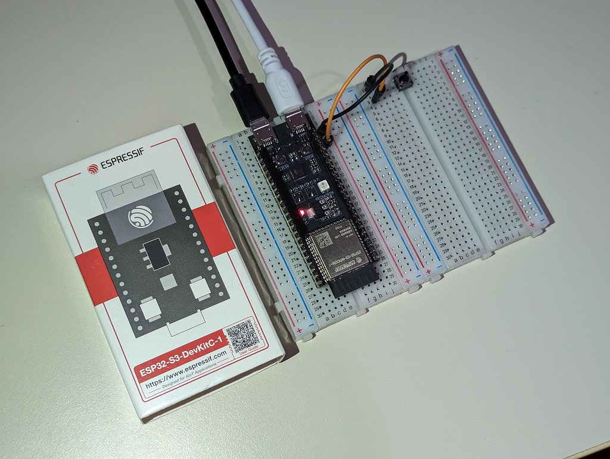

ESP32 で HEOS デバイスを叩く
概要
最近のデノンやマランツのアンプはスマホアプリなどネットワーク経由で操作ができるので、実際に ESP32 を使って wifi 経由での操作を試してみました。
通信プロトコル
“HEOS Protocol” と検索すればデノン、マランツ、B&W などのダウンロードページがみつかりました。telnet でポート1255に接続してコマンドを送ると JSON フォーマットで応答が返ってくるようです。
用意するもの
- ESP32 の開発基板
- ブレッドボード・操作ボタン・ジャンパ
- HEOS CLI Protocol Specification (仕様書)
- Arduino IDE + esp32 + ArduinoJson
完成写真

サンプルコード
Pin14 に接続したボタンを押すと Mute on/off 切り替えするサンプル
- ssid, password, heosdevice は要書き換え
- HEOS デバイスが固定IPであることを前提としているので動的IPの場合は追加のコードが必要
#include <wifi.h>
#include <arduinojson.h>
WiFiClient self;
const char* ssid = "SSID";
const char* password = "PASSWORD";
const IPAddress heosdevice(192,168,1,40);
const int heosport = 1255;
volatile bool g_irq0 = false;
char g_buf[1024];
long g_pid = 0; // 0 is handled as invalid
void setup() {
Serial.begin(115200);
WiFi.begin(ssid, password);
Serial.print("Connecting to ");
Serial.println(ssid);
while (WiFi.status() != WL_CONNECTED) {
delay(500);
Serial.print(".");
}
Serial.print("\r\nWiFi connected\r\n");
self.connect(heosdevice, heosport);
Serial.print("Connecting to HEOS device\r\n");
if(self.connected()){
Serial.print("Connected\r\n");
self.print("heos://player/get_players\r\n");
int len = waitJsonResponse();
if(len>0){
g_pid = getPlayerId(g_buf);
}
Serial.print("Command: Get Players\r\n");
Serial.print("Response: ");
Serial.write(g_buf, len);
}
pinMode(14, INPUT_PULLUP);
attachInterrupt(digitalPinToInterrupt(14), setIRQ0, FALLING);
}
// @return length of a json packet. 0 if failed.
size_t waitJsonResponse(){
int nestlevel = -1;
size_t readlen = 0;
while(1){
if (self.available()) {
char c = self.read();
g_buf[readlen++] = c;
if(c == '{'){
nestlevel++;
}else if(c == '}'){
nestlevel--;
if(nestlevel = 1024){
return 0; // error (Buffer limit)
}
}
}
return readlen;
}
long getPlayerId(char* buf){
StaticJsonDocument doc;
DeserializationError error = deserializeJson(doc, buf);
if (error) {
Serial.print("deserializeJson() failed: ");
Serial.println(error.c_str());
return 0;
}
JsonObject payload_0 = doc["payload"][0];
long payload_0_pid = payload_0["pid"];
return payload_0_pid;
}
void loop() {
if (self.available()) {
char c = self.read();
Serial.print(c);
}
if(g_irq0){
Serial.print("toggleMute\r\n");
toggleMute();
g_irq0 = false;
}
}
void setIRQ0(){
g_irq0 = true;
}
void toggleMute(){
if(!self.connected()){
return;
}
if(g_pid == 0){
return;
}
auto command = String("heos://player/toggle_mute?pid=") + String(g_pid) + String("\r\n");
auto len = command.length();
if(len>255){
return;
}
char buf[256];
command.toCharArray(buf, len+1);
self.write(buf, len);
return;
}